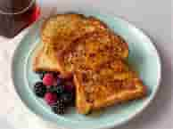

Home
French Toast
This is one of my favourite breakfast dishes. It is quick and easy to make, requires minimal ingredients and tastes amazing
Here is a simple recipe on making it:

Ingredients:
- 2 large eggs
- 1/4 cup milk
- 4 slices of bread (white, wholegrain, or sourdough)
- 1 tablespoon butter or olive oil (for frying)
- Salt and freshly ground black pepper (optional for savory version)
- Mapble syrup, or fresh berries (optional sweet toppings)
Step-by-step Instructions
Step 1: Prepare the Egg Mixture
- Crack the eggs into a shallow bowl and whisk together with the milk. For a savory version, season with a pinch of salt and pepper.
Step 2: Soak the Bread
- Dip each slice of bread into the egg mixture, ensuring both sides are evenly coated. Let it soak for a few seconds to absorb the mixture.
Step 3: Heat the Pan
- Heat a large frying pan over medium heat and melt the butter or add olive oil.
Step 4: Fry the Bread
- Place the soaked bread slices in the pan and cook for 2-3 minutes on each side until golden brown and crispy.
Step 5: Serve Hot
- Transfer the eggy bread to a plate and serve immediately with sweet or savory toppings.
References
Jamie Oliver Eats